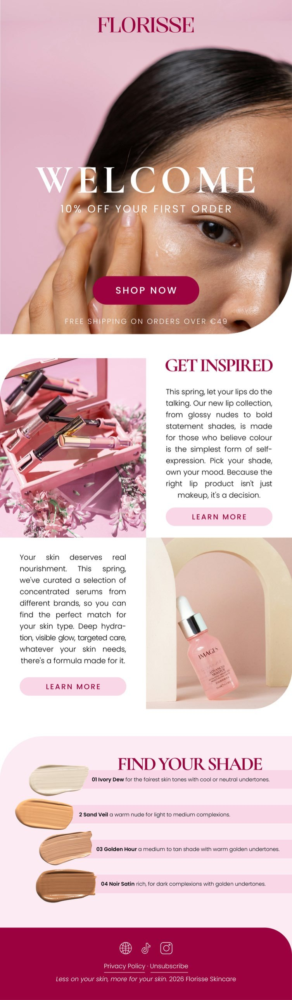
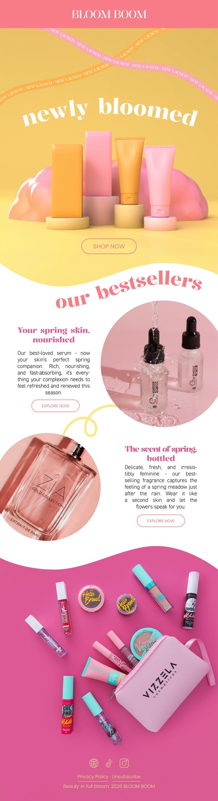
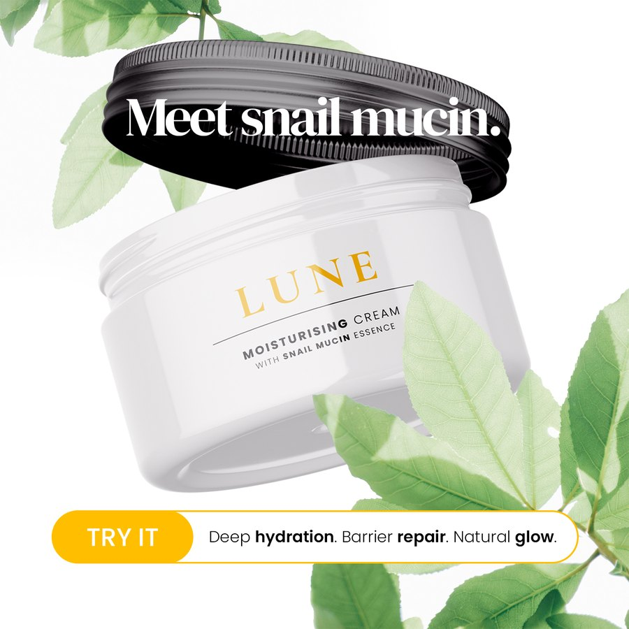
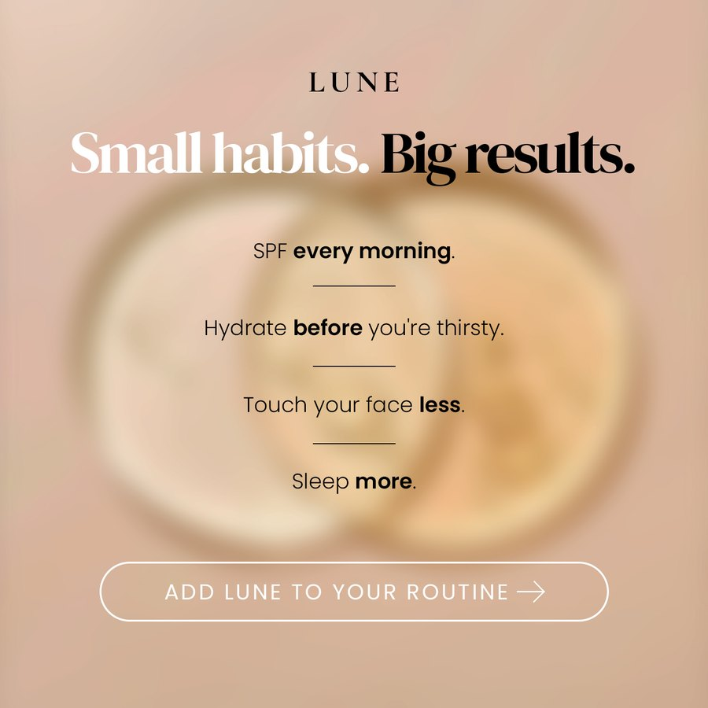

Digital · concept project
Newsletter & social media concepts
Newsletters for Florisse and Bloom Boom and a social media series for LUNE skincare. All three brands are fictional; the layouts, visual systems and hierarchy are mine.
Digital · concept project
Newsletters for Florisse and Bloom Boom and a social media series for LUNE skincare. All three brands are fictional; the layouts, visual systems and hierarchy are mine.
[LUNE posts]

Concept work to show digital skills next to print: a welcome email for a beauty shop (Florisse), a spring launch email (Bloom Boom) and a social media series for a minimalist skincare brand (LUNE).
For LUNE I borrowed the language of an app: toggle switches turned off for fragrance, complicated formulas and fillers say “clean skincare” without a single claim.
Two emails for two very different beauty brands. Scroll through both on the phones below, just like in an inbox.

↓ scroll inside
Florisse — welcome email. Calm and elegant: deep raspberry, lots of white, rounded photo corners and a shade guide with colour swatches instead of a product list.

↓ scroll inside
Bloom Boom — spring launch. Loud and playful: wavy section edges, a “new launch” ribbon and round product photos joined by a loose yellow line.
A series of four posts for a minimalist skincare brand. Each one carries a single idea: what the products leave out, one key ingredient, simple habits and a three-step morning routine. A bold serif, a sunny yellow accent and soft, blurred photos make the series easy to recognise among other posts.




Each brand got its own colours, so even a small thumbnail shows which one it is.